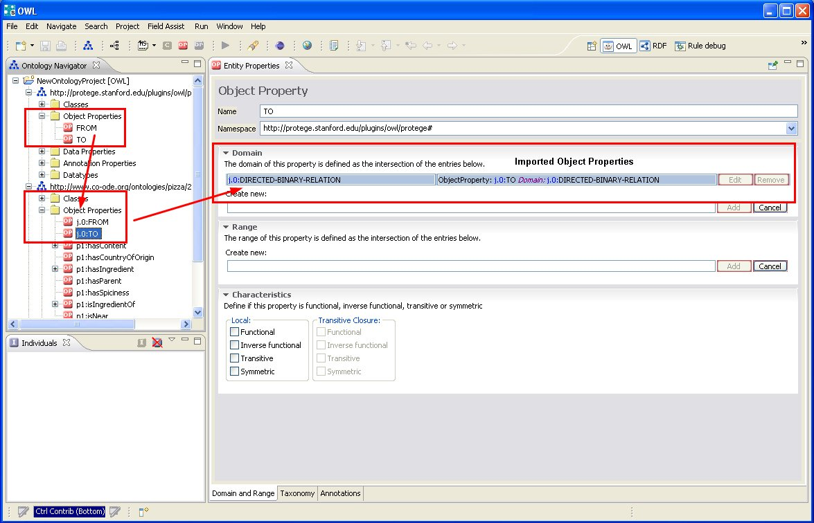
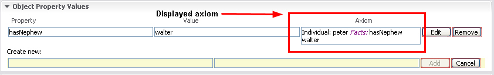

This page explains the preference settings of the OWL Editor.
Annotations such as rdfs:label or datatype property values can be combined with a language attribute. The list of languages that is available when creating an annotation can be configured on the Window >> Preferences >> Language Preferences dialog box, i.e. you can add new languages or change their order. The default languages are:
To access the Preferences dialog of the OWL Editor, select Window >> Preferences >> OWL Preferences. Preferences of the OWL Editor include:
Show Imported Axioms
Select the Show Imported Axioms check box to get the axioms displayed that are imported from other ontologies. Rows containing such imported axioms are highlighted. In addition, a tooltip shows the source ontology the axiom was imported from.

Show Axioms in GUI
Select the check box Show Axioms in GUI to see the complete axioms displayed in the Entity Properties Views.

Use Toolbar for Complex Class Editor
Select the Use Toolbar for Complex Class Editor to enable the Manchester Syntax toolbar. For more information on the Manchester Syntax and the toolbar, see Manchester Syntax.